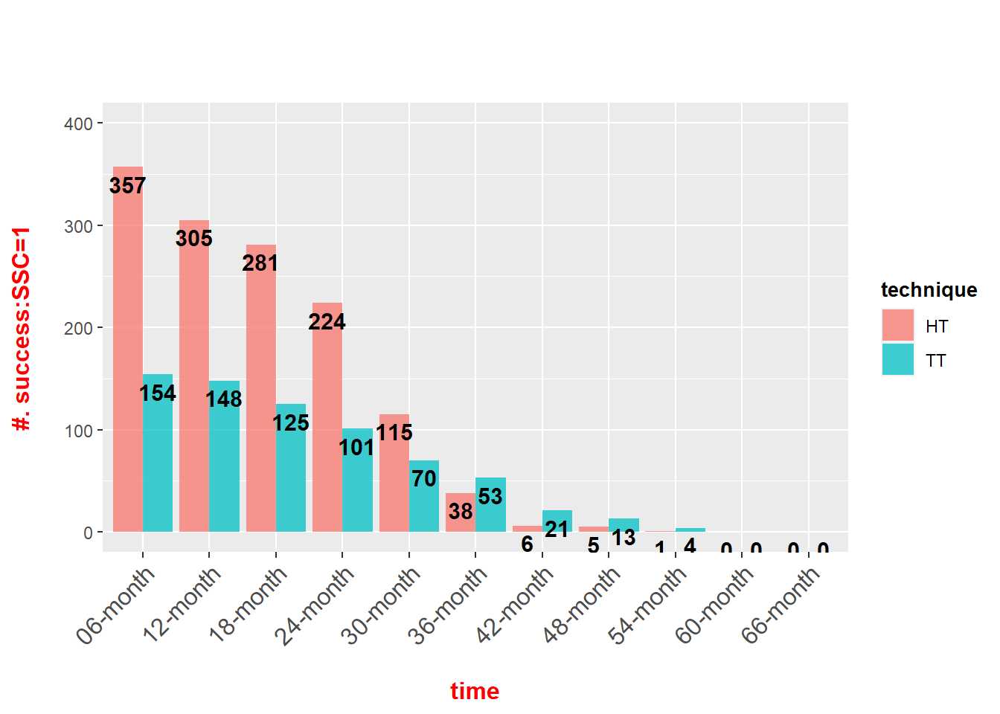

Last updated: 2024-01-08
Checks: 5 2
Knit directory: Collaborations/
This reproducible R Markdown analysis was created with workflowr (version 1.7.0). The Checks tab describes the reproducibility checks that were applied when the results were created. The Past versions tab lists the development history.
The R Markdown file has unstaged changes. To know which version of
the R Markdown file created these results, you’ll want to first commit
it to the Git repo. If you’re still working on the analysis, you can
ignore this warning. When you’re finished, you can run
wflow_publish to commit the R Markdown file and build the
HTML.
Great job! The global environment was empty. Objects defined in the global environment can affect the analysis in your R Markdown file in unknown ways. For reproduciblity it’s best to always run the code in an empty environment.
The command set.seed(20210523) was run prior to running
the code in the R Markdown file. Setting a seed ensures that any results
that rely on randomness, e.g. subsampling or permutations, are
reproducible.
Great job! Recording the operating system, R version, and package versions is critical for reproducibility.
Nice! There were no cached chunks for this analysis, so you can be confident that you successfully produced the results during this run.
Using absolute paths to the files within your workflowr project makes it difficult for you and others to run your code on a different machine. Change the absolute path(s) below to the suggested relative path(s) to make your code more reproducible.
| absolute | relative |
|---|---|
| C:/Shengtong/Research/AllCollaboration/Collaborations/analysis/Rfunctions.R | analysis/Rfunctions.R |
Great! You are using Git for version control. Tracking code development and connecting the code version to the results is critical for reproducibility.
The results in this page were generated with repository version 9bdae92. See the Past versions tab to see a history of the changes made to the R Markdown and HTML files.
Note that you need to be careful to ensure that all relevant files for
the analysis have been committed to Git prior to generating the results
(you can use wflow_publish or
wflow_git_commit). workflowr only checks the R Markdown
file, but you know if there are other scripts or data files that it
depends on. Below is the status of the Git repository when the results
were generated:
Ignored files:
Ignored: .Rhistory
Ignored: analysis/.Rhistory
Ignored: analysis/2022_Mar2_Marinho_cache/
Unstaged changes:
Modified: analysis/2023_12_03_Cem.Rmd
Note that any generated files, e.g. HTML, png, CSS, etc., are not included in this status report because it is ok for generated content to have uncommitted changes.
These are the previous versions of the repository in which changes were
made to the R Markdown (analysis/2023_12_03_Cem.Rmd) and
HTML (docs/2023_12_03_Cem.html) files. If you’ve configured
a remote Git repository (see ?wflow_git_remote), click on
the hyperlinks in the table below to view the files as they were in that
past version.
| File | Version | Author | Date | Message |
|---|---|---|---|---|
| Rmd | 9bdae92 | han | 2024-01-05 | 1/5/2024 |
| html | 9bdae92 | han | 2024-01-05 | 1/5/2024 |
| Rmd | ad3ea51 | han | 2024-01-03 | 1/3/2024 |
| html | ad3ea51 | han | 2024-01-03 | 1/3/2024 |
| Rmd | e3f7270 | han | 2023-12-31 | 12/31/2023 |
| Rmd | 93b8872 | han | 2023-12-21 | 12/21/2023 |
| html | 93b8872 | han | 2023-12-21 | 12/21/2023 |
| Rmd | 3b216e4 | han | 2023-12-18 | 12/18/2023 |
| html | 3b216e4 | han | 2023-12-18 | 12/18/2023 |
 * only include HT and TT
List of 16
$ n : int 698
$ time : num [1:10] 6 12 18 24 30 36 42 48 54 60
$ n.risk : num [1:10] 698 511 453 406 325 185 91 27 18 5
$ n.event : num [1:10] 187 58 47 81 140 94 64 9 13 5
$ n.censor : num [1:10] 0 0 0 0 0 0 0 0 0 0
$ surv : num [1:10] 0.732 0.649 0.582 0.466 0.265 ...
$ std.err : num [1:10] 0.0229 0.0278 0.0321 0.0405 0.063 ...
$ cumhaz : num [1:10] 0.268 0.381 0.485 0.685 1.115 ...
$ std.chaz : num [1:10] 0.0196 0.0246 0.0289 0.0364 0.0515 ...
$ type : chr "right"
$ logse : logi TRUE
$ conf.int : num 0.95
$ conf.type: chr "log"
$ lower : num [1:10] 0.7 0.615 0.546 0.43 0.234 ...
$ upper : num [1:10] 0.766 0.685 0.619 0.504 0.3 ...
$ call : language survfit(formula = Surv(survival_time, status) ~ 1, data = data_ssc_survival_complete)
- attr(*, "class")= chr "survfit"Call: survfit(formula = Surv(survival_time, status) ~ 1, data = data_ssc_survival_complete)
time n.risk n.event survival std.err lower 95% CI upper 95% CI
6 698 187 0.73209 0.01676 0.69996 0.7657
12 511 58 0.64900 0.01807 0.61454 0.6854
18 453 47 0.58166 0.01867 0.54619 0.6194
24 406 81 0.46562 0.01888 0.43004 0.5041
30 325 140 0.26504 0.01671 0.23424 0.2999
36 185 94 0.13037 0.01274 0.10764 0.1579
42 91 64 0.03868 0.00730 0.02672 0.0560
48 27 9 0.02579 0.00600 0.01635 0.0407
54 18 13 0.00716 0.00319 0.00299 0.0172
60 5 5 0.00000 NaN NA NATT:SSC_Placement_Technique=1 vs
HT:SSC_Placement_Technique=2
At Risk: No. survivals,
Events: No.failures
Call:
survdiff(formula = Surv(survival_time, status) ~ SSC_Placement_Technique,
data = data_ssc_survival_complete)
N Observed Expected (O-E)^2/E (O-E)^2/V
SSC_Placement_Technique=1 225 225 255 3.48 9.01
SSC_Placement_Technique=2 473 473 443 2.00 9.01
Chisq= 9 on 1 degrees of freedom, p= 0.003
sessionInfo()R version 4.2.2 (2022-10-31 ucrt)
Platform: x86_64-w64-mingw32/x64 (64-bit)
Running under: Windows 10 x64 (build 19045)
Matrix products: default
locale:
[1] LC_COLLATE=English_United States.utf8
[2] LC_CTYPE=English_United States.utf8
[3] LC_MONETARY=English_United States.utf8
[4] LC_NUMERIC=C
[5] LC_TIME=English_United States.utf8
attached base packages:
[1] grid stats graphics grDevices utils datasets methods
[8] base
other attached packages:
[1] survival_3.4-0 condsurv_1.0.0 ggsurvfit_1.0.0 lubridate_1.9.2
[5] irr_0.84.1 lpSolve_5.6.18 readxl_1.4.2 cowplot_1.1.1
[9] matrixStats_0.63.0 gridExtra_2.3 DT_0.27 rstatix_0.7.2
[13] ggpubr_0.6.0 kableExtra_1.3.4 forcats_1.0.0 stringr_1.5.0
[17] dplyr_1.0.10 purrr_1.0.1 readr_2.1.4 tidyr_1.3.0
[21] tibble_3.1.8 ggplot2_3.4.1 tidyverse_1.3.2
loaded via a namespace (and not attached):
[1] fs_1.6.3 webshot_0.5.4 httr_1.4.5
[4] rprojroot_2.0.3 tools_4.2.2 backports_1.4.1
[7] bslib_0.4.2 utf8_1.2.2 R6_2.5.1
[10] DBI_1.1.3 colorspace_2.0-3 withr_2.5.0
[13] tidyselect_1.2.0 compiler_4.2.2 git2r_0.31.0
[16] cli_3.4.1 rvest_1.0.3 xml2_1.3.3
[19] labeling_0.4.2 sass_0.4.5 scales_1.2.1
[22] systemfonts_1.0.4 digest_0.6.31 rmarkdown_2.20
[25] svglite_2.1.1 pkgconfig_2.0.3 htmltools_0.5.4
[28] dbplyr_2.3.0 fastmap_1.1.0 highr_0.10
[31] htmlwidgets_1.6.1 rlang_1.0.6 rstudioapi_0.14
[34] farver_2.1.1 jquerylib_0.1.4 generics_0.1.3
[37] jsonlite_1.8.4 car_3.1-1 googlesheets4_1.0.1
[40] magrittr_2.0.3 patchwork_1.1.3 Matrix_1.5-1
[43] Rcpp_1.0.9 munsell_0.5.0 fansi_1.0.3
[46] abind_1.4-5 lifecycle_1.0.3 stringi_1.7.8
[49] whisker_0.4.1 yaml_2.3.7 carData_3.0-5
[52] promises_1.2.0.1 crayon_1.5.2 lattice_0.20-45
[55] splines_4.2.2 haven_2.5.1 hms_1.1.2
[58] knitr_1.42 pillar_1.9.0 ggsignif_0.6.4
[61] reprex_2.0.2 glue_1.6.2 evaluate_0.20
[64] modelr_0.1.10 vctrs_0.5.2 tzdb_0.3.0
[67] httpuv_1.6.9 cellranger_1.1.0 gtable_0.3.1
[70] assertthat_0.2.1 cachem_1.0.7 xfun_0.37
[73] broom_1.0.3 later_1.3.0 googledrive_2.0.0
[76] viridisLite_0.4.1 gargle_1.3.0 workflowr_1.7.0
[79] timechange_0.2.0 ellipsis_0.3.2